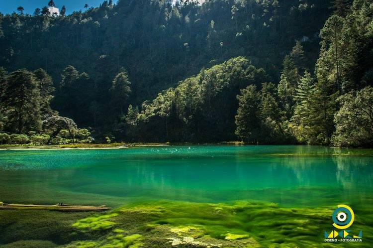
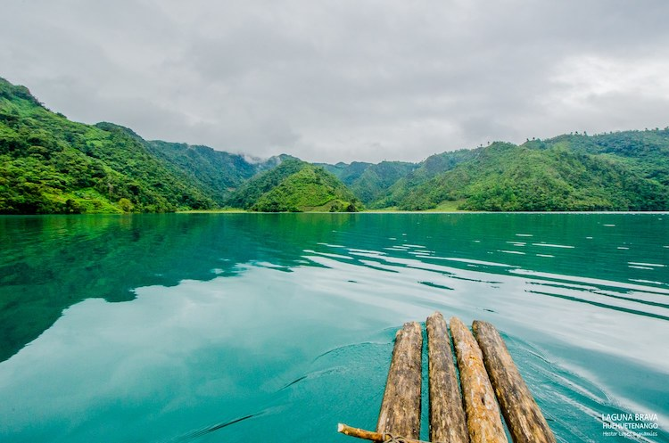
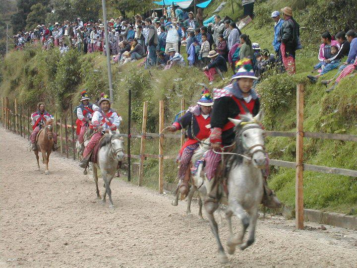
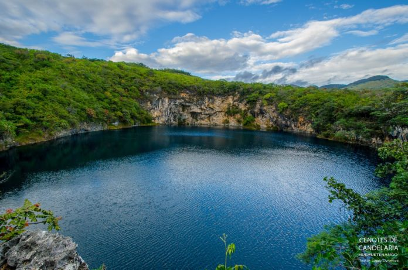
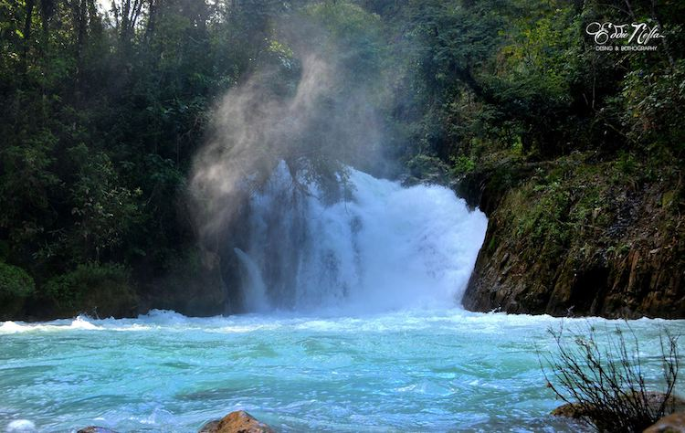

Es un departamento de Guatemala, su cabecera lleva su mismo nombre pero es más conocida como “La tacita de Plata”.
Tiene una topografía variada, con montañas y cimas que exceden los 3.850 msnm en la Sierra de los Cuchumatanes y tierras bajas que descienden hasta unos 300msnm. A continuación algunos de los tantos lugares que debes conocer en Huehuetenango:
Es una de las áreas protegidas del departamento, se localiza en la Villa de Chiantla. Su color azul oscuro en el centro contrata con el verde turquesa de las orillas, creando tonalidades increíbles. Se puede ir a visitar durante cualquier época del año, pero siempre tendrá un clima frío.

También conocida como Laguna Yolnabaj es la laguna más bella de Guatemala, por su azul turquesa intenso. Se encuentra ubicada en una selva virgen en las Aldeas de Yalambojoch, El Aguacate y San Francisco. Es un completo de varias lagunas interconectadas por medio de cascadas con un cuerpo principal de más de 8 kilómetros de extensión. Es considerada una de las lagunas más limpias y colorida de Guatemala

Es un municipio de Huehuetenango situado en la Sierra de los Cuchumatanes a una altura que oscila entre los 3.100 metros del altiplano. Es el lugar ideal para experimental la auténtica cultura maya. Puedes aprovechar el camino hacia el lugar, ya que situado a 12 kilómetros de ascenso hacia Todos Santos, se encuentra situado uno de los miradores más populares de Huehuetenango, el Mirador Juan Diéguez Olaverri.

Son unas pozas de agua cristalina conectadas por una serie de ríos subterráneos que crean paisajes únicos. Estos cenotes tienen una profundidad de 30 metros y se distinguen por su agua turquesa y verde. Dicen que el uno de los cenotes tiene más de 35,000 años de antigüedad. Por ser una posada comunitaria, y por ser considerada por la población como sagrada, solo utilizan velas para iluminar el sitio, por lo que no existe tecnología ni electricidad en el lugar.

Como su nombre lo indica, este río se caracteriza por su color como cielo el cual se debe al suelo arcilloso que tiene. Este río emerge de las montañas más altas de la región. Este río se encuentra ubicado en Jacaltenango, un municipio de la región Huista. Muchos poblados de la región son los que utilizan esta agua para suplir sus necesidades ya que tiene un área aproximada de captación de aproximadamente 782 kilómetros cuadrados.
